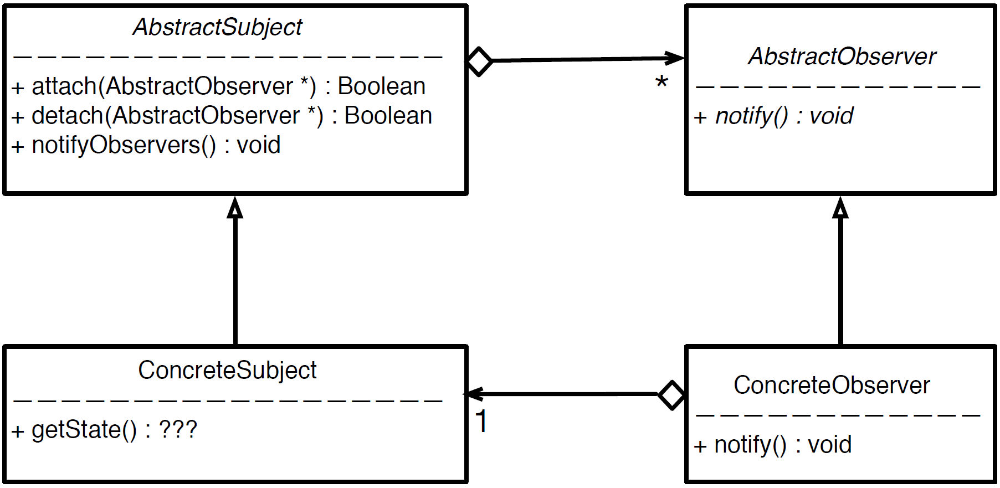
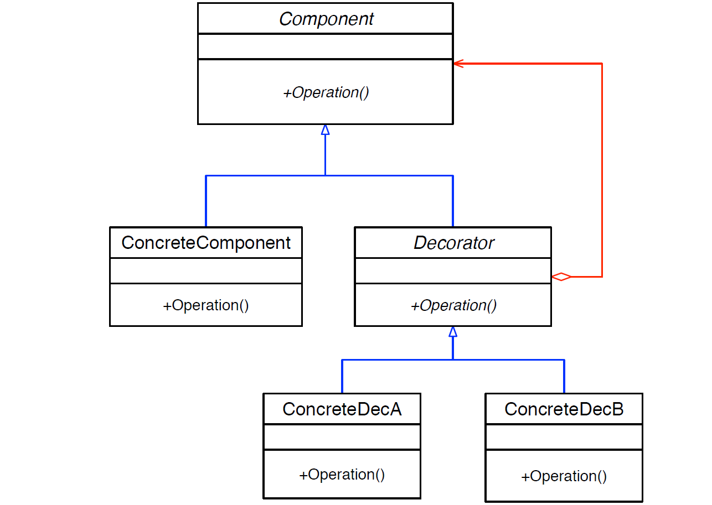
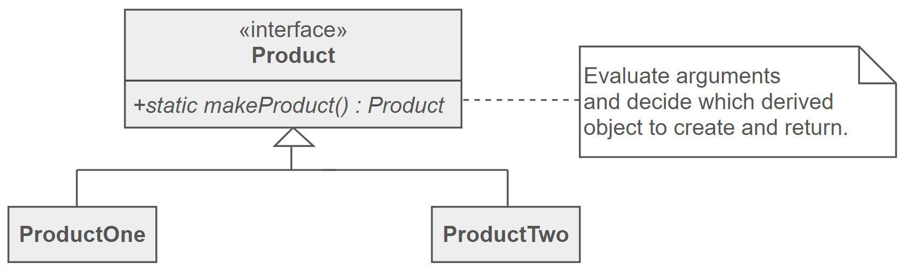

Toggle Menu
The observer pattern is used to establish a one-to-many dependency between objects so that when one object changes state, all its dependents are notified and updated automatically. The general structure has:
The decorator pattern is used to attach responsibilities to an object dynamically. Inheritance is not feasible as it is static and applies to the entire class. The decorator pattern provides a flexible alternative to subclassing for extending functionality. It is dynamic and is applied to individual objects. The general structure has:
The Factory Method Pattern uses factory methods to deal with the problem of creating objects without having to specify the exact class of the object being created. It allows classes to defer instantiation it uses to subclasses. The general structure has:
The template method pattern defines the skeleton of an algorithm in a "template method". It defers some steps to subclasses to override by creating "placeholders". The derived classes then override these placeholders to complete the algorithm. The general structure has:
Furthermore, as discussed in another section, pre and postconditions are useful to ensure that the class invariants are not violated during the execution of a program. It is important to modularize so we don't have repetitive checking of pre/post conditions and, potentially, forgetting to check them. It is useful to check them in one place, the base class. This is what the NVI idiom tries to accomplish. It separates customizable behaviour as private methods with non-customizable steps in between without changing public interface. Here are its guidelines:
The visitor pattern is used to perform an extensible set of operations on an object structure without requiring any change to the structure. It can also be used to add functionality to existing classes without changing or recompiling classes. It allows us to create separate algorithms for different subclasses of the Element class by overloading the
Software Engineering
Table of Contents
Testing
Why we test?- Make judgement about quality or acceptability of program
- To discover errors
- Find failure
- Demonstrate correct execution
Test Case
- essence of software testing to determine a set of test cases for the item to be tested- Specification-based Testing
- programs can be considered functions that map values from input domain to values in its output range
- black box testing
- content of black box is not known
- only understand input and output
- Advantages:
- Independent of how software is implemented
- Test case development occur in parallel with implementation
- Disadvantages:
- Significant redundancies
- Gaps of untested software
- Code-based Testing
- white box testing
- implementation is known
- if program implements a behaviour not specified, this will never be revealed
How to Test
- Start with black box testing because it is only dependent on the specification not the implementation
- Supplement with white box: cover several places in your program
- Black Box Testing
- Test the boundaries of valid input (edge cases)
- Multiple simultaneous boundaries
- Experienced tester will be able to guess what type of input is more likely to generate an error
- Test extreme cases
- White Box Testing
- Execute all lines of code
- Execute all logical paths
- Check that all functions run
- Regression Testing
- New changes do not cause previous code to break
- Run a set of test suites and testing scripts that contain previously checked tests after each addition of the code or bfore every release
Design Patterns
Software design patterns are general reusable solutions to commonly occurring problems within a given context in software design. For example, using the concept of iterators with Linked Lists.
class List {
struct Node;
Node *list = nullptr;
public:
class Iterator {
Node *p;
public:
explicit Iterator(Node *p) : p{p} {};
int &operator*(){
return p->data;
}
Iterator &operator++() {
p = p->next;
return *this;
}
bool operator ==(const Iterator &other) const {
return p == other.p;
}
bool operator !=(const Iterator &other) const {
return !(*this == other);
}
Iterator begin() {
return Iterator(list);
}
Iterator end() {
return Iterator(nullptr);
}
}
}
List lst;
lst.addToFront(1);
lst.addToFront(2);
lst.addToFront(3);
for (auto it = lst.begin(); it != lst.end; ++it){
cout << *it << end;
}
// OR
for (auto n : lst) {
cout << n << endl;
}
Observer Pattern
The observer pattern is used to establish a one-to-many dependency between objects so that when one object changes state, all its dependents are notified and updated automatically. The general structure has:
-
AbstractSubject
- keeps tracks of observers
- allows adding and removing of observers
- notifies observers when subject's state changes
-
ConcreteSubject
- the "real" class that implements
AbstractSubject - its change will notify the observers
- the "real" class that implements
-
AbstractObserver
- an abstract class that defines the method that should be called whenever there is a change.
-
ConcreteObserver
- the class that needs to keep itself updated with changes.
- implements
AbstractObserver - registers itself with the
ConcreteSubject
- Subject: Product
- Observers: Stores
-
When price updates, it calls
notifyObservers()which callsnotify()on each store.
// AbstractSubject
class Subject {
std::vector<Shop*> observers;
public:
void attach(Observer* o) { observers.push_back(o); }
void detach(Observer* o) {
list.erase(std::remove(list.begin(), list.end(), o), list.end());
}
void notifyObservers(float price) {
for (auto o : observers) {
o->notify(price);
}
}
}
// ConcreteSubject
class Product : public AbstractSubject {
public:
void updatePrice(float price) { notifyObservers(price); }
}
// AbstractObserver
class Observer {
public:
virtual void notify(float price) = 0;
}
// ConcreteObserver
class Shop : public Observer {
std::string name;
float price;
public:
Shop(std::string name) : name { name } {}
void notify(float price) { this->price = price; }
}
int main() {
Product p;
Shop shop1("Shop1");
Shop shop2("Shop2");
// attach observers
p.attach(shop1);
p.attach(shop2);
// update price and notify observers
p.updatePrice(2.35);
// Shop2 not looking to update price, so they unsubscribe
p.detach(shop2);
// only Shop1 is updated now
p.updatePrice(2.30);
}
Decorator Pattern
The decorator pattern is used to attach responsibilities to an object dynamically. Inheritance is not feasible as it is static and applies to the entire class. The decorator pattern provides a flexible alternative to subclassing for extending functionality. It is dynamic and is applied to individual objects. The general structure has:
-
Component
- "lowest common denominator"
- abstract class for "base object" and the decorators
- can be used on its own or wrapped by decorator
-
ConcreteComponent
- implements
Component - the object we're adding functionalities to
- implements
-
Decorator
- the extra functionality
- implements
Component(same as ConcreteComponent) - has a pointer to a component
-
ConcreteDecorator
- the extra functionality
- implements
Component(same as ConcreteComponent) - one is defined for each optional functionality
- implements their "added functionality" and delegates it to the Decorator base class
// Lowest common denominator
class Pizza {
public:
virtual std::string description() = 0;
virtual ~Pizza() {};
};
// ConcreteComponent (base object)
class CrustAndSauce: public Pizza {
public:
// virtual method (override)
std::string description() { return "Pizza"; }
};
// Decorator
class Decorator: public Pizza {
protected:
Pizza *component;
public:
Decorator(Pizza *component) : component{ component } {}
Decorator::~Decorator() { delete component; }
};
// Decorator 1
class StuffedCrust: public Decorator {
public:
StuffedCrust(Pizza *component) : Decorator{ p } {}
// virtual
std::string description() {
// delegation to component and add extra functionality
return component->description() + " with stuffed crust";
}
};
// Decorator 2
class DippingSauce: public Decorator {
std::string flavour;
public:
DippingSauce(std::string flavour, Pizza *component) :
Decorator{ p }, flavour{ flavour } {}
// virtual
std::string description() {
// delegation to component and add extra functionality
return component->description() + " with " + flavour + " dipping sauce";
}
};
int main() {
Pizza *p = new StuffedCrust(
new DippingSauce("BBQ",
new DippingSauce("Garlic",
new CrustAndSauce)));
cout << p->description();
// Output: "Pizza with Garlic dipping sauce with BBQ dipping sauce with stuffed crust"
}
Factory Method Pattern
The Factory Method Pattern uses factory methods to deal with the problem of creating objects without having to specify the exact class of the object being created. It allows classes to defer instantiation it uses to subclasses. The general structure has:
-
AbstractProduct
- Contains the factory method that creates the required subclass. Commonly implmented as a
staticfunction.
- Contains the factory method that creates the required subclass. Commonly implmented as a
-
ConcreteProduct
- The concrete subclasses that are actually returned.
=
// AbstractProduct
class Enemy {
public:
// factory method
static Enemy *createEnemy(const std::string type) {
if (type == "turtle") return new Turtle;
if (type == "bullet") return new Bullet;
return NULL;
};
// ConcreteProduct
class Turtle : public Enemy {}
class Bullet : public Enemy {}
int main() {
Enemy *e = Enemy::createEnemy(turtle);
return 0;
}
Template Method Pattern
The template method pattern defines the skeleton of an algorithm in a "template method". It defers some steps to subclasses to override by creating "placeholders". The derived classes then override these placeholders to complete the algorithm. The general structure has:
-
AbstractClass
- contains the template method
- contains abstract versions of the placeholder operations
-
ConcreteClass
- each ConcreteClass implements the full version of the algorithm by overriding all placeholder functions
// AbstractClass
class Turtle {
public:
// template method
void draw() {
drawHead();
drawShell();
drawFeet();
}
private:
void drawHead() {}
void drawFeet() {}
// placeholder method
virtual void drawShell = 0;
}
// ConcreteClassA
class RedTurtle : public Turtle {
// override placeholder
void drawShell override {
// draw red shell
}
}
// ConcreteClassB
class GreenTurtle : public Turtle {
// override placeholder
void drawShell override {
// draw green shell
}
}
Non-Virtual Interface(NVI) Idiom
Public virtual functions have the following uses:- Provides an interface to client. Indicates provided behaviour.
- Provides an interface to subclasses. Contains "hooks" for subclasses to insert specialized behaviour
Furthermore, as discussed in another section, pre and postconditions are useful to ensure that the class invariants are not violated during the execution of a program. It is important to modularize so we don't have repetitive checking of pre/post conditions and, potentially, forgetting to check them. It is useful to check them in one place, the base class. This is what the NVI idiom tries to accomplish. It separates customizable behaviour as private methods with non-customizable steps in between without changing public interface. Here are its guidelines:
- All public methods should be non-virtual, using the Template Design Pattern
- All virtual methods should be private (ideally except in the following case)
- If derived classes need to invoke the base implementation of a virtual method, we make it protected.
- Base class destructor should be either public and virtual, or protected and nonvirtual.
// Without NVI Idiom
class DigitalMedia {
public:
virtual void play() = 0;
virtual ~DigitalMedia;
}
// With NVI Idiom
class DigitalMedia {
public:
void play() {
doPlay();
}
virtual ~DigitalMedia();
private:
virtual void doPlay() = 0;
}
Advantages of NVI Idiom in above example:
- extra control over Play
- we can add before/after code around doPlay that cant change
- we can add more "hooks" by calling additional virtual methods from play
- all this can be done without changing the public interface
Visitor Pattern
The visitor pattern is used to perform an extensible set of operations on an object structure without requiring any change to the structure. It can also be used to add functionality to existing classes without changing or recompiling classes. It allows us to create separate algorithms for different subclasses of the Element class by overloading the
visit() method for each element class. The general structure has:
-
AbstractVisitor
- interface that defines the logic supported
- creates a
visit(ConcreteElement)method for eachAbstractElementderived type - coupled with
ConcreteElement
-
ConcreteVisitor
- implements
AbstractVisitorand itsvisit()methods - Each
ConcreteVisitorrepresents a different logic - create a class for each operation to be performed on the Element objects
- implements
-
AbstractElement
- interface that defines the elements in the strucure
- creates an
accept(AbstractVisitor)method that takes in anAbstractVisitor - coupled with
AbstractVisitor
-
ConcreteElement
- implements
AbstractElementand itsaccept()methods - Each
ConcreteElementrepresents a different structure - Implments the
accept(AbstractVisitor)method by callingvisit(*this)on theAbstractVisitorargument, which will apply the logic.
- implements
// AbstractElement
class Book {
public:
virtual void accept(BookVisitor &v) = 0;
};
// ConcreteElement
class Novel : public Book {
public:
Novel(std::string author) : author { author } {}
void accept(BookVisitor &v) override { v.visit(*this); }
std::string getAuthor() { return author; }
private:
std::string author;
};
// ConcreteElement
class Text : public Book {
public:
Text(std::string topic) : topic { topic } {}
void accept(BookVisitor &v) override { v.visit(*this); }
std::string getTopic() { return topic; }
private:
std::string topic;
};
// ConcreteElement
class Comic : public Book {
public:
Comic(std::string hero) : hero { hero } {}
void accept(BookVisitor &v) { v.visit(*this); }
std::string getHero() { return hero; }
private:
std::string hero;
};
// AbstractVisitor
class BookVisitor {
public:
virtual void visit(Book &b) = 0;
virtual void visit(Text &t) = 0;
virtual void visit(Comic &c) = 0;
};
// ConcreteVisitor
// Tracks how many of each type of book
// Groups novels by author, texts by topic, comics by hero
class Catalog : public BookVisitor {
map theCatalog;
public:
map getCatalog() { return theCatalog; }
void visit(Book &b) { ++theCatalog[b.getAuthor()]; }
void visit(Text &t) { ++theCatalog[t.getTopic()]; }
void visit(Comic &c) { ++theCatalog[t.getHero()]; }
};
int main() {
std::vector<Book> books;
Novel harryPotter("J.K. Rowling");
Text ctci("Programming");
Comic spider("Spider-Man");
books.push_back(harryPotter);
books.push_back(ctci);
books.push_back(spider);
Catalog log;
// call accept on each element and passing in visitor object
for (auto& book : books) {
book.accept(log);
}
}